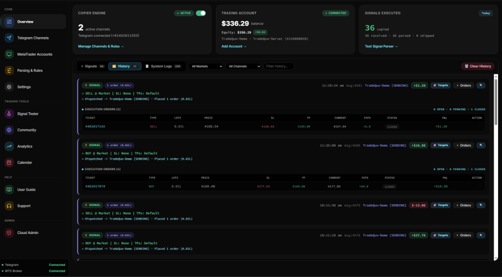

⚡ 100% Cloud-Based Mobile Trade Copier · Zero Downloads · No VPS Needed
Copy Trading on Autopilot.
Your Signals. Any Broker. 100% Cloud.
Instantly automate your Telegram trade signals directly into your MT4 & MT5 broker accounts. Built with institutional grid ladders, SMC Fair Value Gap filters, and dynamic break-even — managed 24/7 entirely from your phone or web browser.
Sub-15ms Latency
Instant Cloud Routing
Zero VPS Required
Runs 24/7 With PC Off
Mobile-First PWA
iOS & Android Standalone
Institutional Safety
Grid Ladders & SMC Filters


⚡ XAUUSD BUY TP1 HIT +22 Pips | SHAVED 20% & SL MOVED TO BE
⚡ CLOUD ENGINE SIGNAL PARSED < 12ms | MTPROTO TELEGRAM BRIDGE
⚡ XAUUSD GRID LADDER 5 TIERS EXECUTED | OPTIMAL AVERAGE ENTRY
⚡ SMC FILTER FVG VERIFIED VALIDATED | ORDER BLOCK CONFIRMED
⚡ EURUSD BUY TP2 HIT +45 Pips | SHAVED 20% PROFIT LOCKED
⚡ MOBILE PWA TOUCH COMMAND ONLINE | SYNCED VIA CLOUD
⚡ XAUUSD BREAKEVEN ACTIVE SL SECURED | RISK-FREE TRADE
⚡ US30 BUY TP3 HIT +110 Pips | AUTONOMOUS HARVEST
⚡ XAUUSD BUY TP1 HIT +22 Pips | SHAVED 20% & SL MOVED TO BE
⚡ CLOUD ENGINE SIGNAL PARSED < 12ms | MTPROTO TELEGRAM BRIDGE
⚡ XAUUSD GRID LADDER 5 TIERS EXECUTED | OPTIMAL AVERAGE ENTRY
⚡ SMC FILTER FVG VERIFIED VALIDATED | ORDER BLOCK CONFIRMED
⚡ EURUSD BUY TP2 HIT +45 Pips | SHAVED 20% PROFIT LOCKED
⚡ MOBILE PWA TOUCH COMMAND ONLINE | SYNCED VIA CLOUD